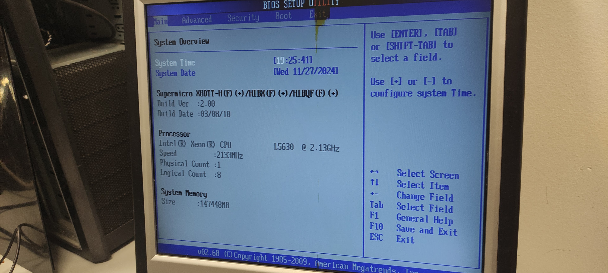
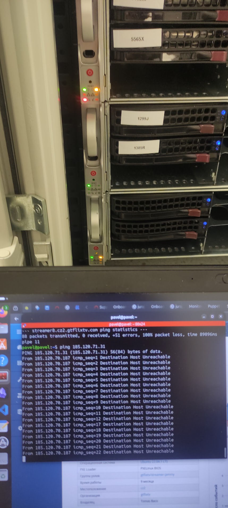

Požadavek
Uživatel nebo Git vytvoří nový požadovaný stav.
Výběrové řízení · Onlio, a.s.
Přehled mých pracovních zkušeností se správou Linuxových systémů, cloudové infrastruktury, monitoringem, automatizací a provozem zákaznických prostředí.
Úvod
Dobrý den, paní Tindel,
děkuji Vám za zprávu a za možnost podrobněji představit své zkušenosti. Níže uvádím odpovědi na jednotlivé otázky včetně ukázek praktické práce s cloudovým prostředím, Kubernetes, serverovým hardwarem a zákaznickou infrastrukturou.
Otázky 1–8
Jednotlivé bloky lze otevřít samostatně. Navigace v horní části stránky umožňuje rychlý přechod na konkrétní otázku.
V současnosti dokončuji magisterské studium informatiky na České zemědělské univerzitě v Praze. Všechny studijní předměty mám splněné a zbývá mi pouze obhajoba diplomové práce. Z tohoto důvodu jsem nyní plně k dispozici pro práci na hlavní pracovní poměr.
Moje poslední relevantní pozice byla Junior Linux Administrator ve společnosti Cloudinfrastack v Praze. Pracoval jsem v prostředí velkého privátního cloudu, který zahrnoval více než 300 fyzických serverů využívaných různými zákaznickými projekty.
Každodenní práce spojovala kontrolu provozu, reakce na monitorovací upozornění, prvotní analýzu incidentů, práci s Linuxovými servery, cloudovými virtuálními stroji, úložištěm a fyzickým hardwarem v datacentru. Součástí práce byla také komunikace se zákazníky a kolegy během nepřetržitého provozu.
U běžných incidentů jsem samostatně ověřoval stav serveru, dostupnost služeb, systémové prostředky, síťovou komunikaci a související logy. U složitějších nebo rizikových zásahů jsem problém zdokumentoval a předal zkušenějšímu administrátorovi s již připravenými technickými informacemi.


Nejvíce praktických zkušeností mám se servery Ubuntu 22.04 a 24.04. V dřívější práci jsem používal také Astra Linux a nyní si své znalosti rozšiřuji směrem k prostředí Red Hat Enterprise Linux.
Při běžné administraci jsem se připojoval prostřednictvím SSH, kontroloval stav služeb, procesů, paměti a diskového prostoru, vyhodnocoval systémové logy a ověřoval síťovou dostupnost. Řešil jsem také situace, kdy se služba nespustila, server neodpovídal, narůstal objem logů nebo nebyla správně aplikována centrální konfigurace.
Při diagnostice postupuji od celkového stavu systému ke konkrétní službě. Nejprve ověřím, zda je server dostupný a zda má dostatek prostředků. Následně zkontroluji službu, její závislosti, čas vzniku problému, poslední změny a související záznamy. Po zásahu vždy ověřuji, zda je služba skutečně dostupná a zda se její stav vrátil do monitoringu jako zdravý.
Absolvoval jsem Red Hat kurzy Enterprise Linux Technical Overview a Ansible Basics: Automation Technical Overview. Současně pokračuji v kurzu Introduction to Linux, abych propojil praktické zkušenosti s ucelenou administrátorskou metodikou.

Monitoring a prvotní diagnostika patřily mezi hlavní části mé práce v Cloudinfrastacku. Monitorovací prostředí upozorňovalo na nedostupné servery, nefunkční služby, problémy s databázemi, úložištěm, síťovými rozhraními nebo systémovými prostředky.
Po přijetí upozornění jsem nejprve ověřil, zda jde o skutečný incident, krátkodobý výkyv nebo následek plánované změny. Poté jsem porovnal stav monitoringu s reálným stavem serveru, systémovými logy a dostupností navazujících služeb.
Setkával jsem se například s nedostupnými hosty, zastavenými službami, problémy síťového spojení, neúspěšnou aplikací centrální konfigurace, chybami certifikátů, upozorněními z databází nebo problémy po výpadku elektrického napájení.
Výsledkem mé analýzy nebylo pouze odstranění jednotlivé chyby. Důležité bylo také zkontrolovat, zda nedošlo k širšímu dopadu, zda jsou funkční závislé systémy a zda monitoring znovu potvrzuje normální provoz.

Moje praktické zkušenosti propojují provoz Linuxových serverů, cloudovou infrastrukturu, Kubernetes a vývoj nástrojů, které usnadňují každodenní správu prostředí.
V produkčním prostředí jsem pracoval s Ubuntu servery, virtuálními instancemi v OpenStacku, distribuovaným úložištěm Ceph a centrální správou konfigurace pomocí Puppetu a Foremanu. Kontroloval jsem stav serverů a služeb, reagoval na monitoring, analyzoval logy a ověřoval stav infrastruktury po provedeném zásahu.
Rozsáhlejší praktickou zkušenost s Kubernetes jsem získal během přípravy diplomové práce. Na Ubuntu serveru jsem vytvořil MicroK8s cluster, nainstaloval Argo CD, propojil jej s GitHub repozitářem a nasadil demonstrační aplikaci pomocí Helm chartu. Pracoval jsem s Deploymenty, Pody, Services, ReplicaSety, namespaces, YAML manifesty, logy a událostmi v clusteru.
Prakticky jsem ověřoval také princip GitOps. Požadovaný stav aplikace byl uložen v Git repozitáři a Argo CD automaticky porovnávalo tento stav se skutečným stavem clusteru. Při změně počtu replik nebo při ruční odchylce v clusteru dokázalo změnu detekovat, provést synchronizaci a pomocí self-healingu obnovit správný počet běžících Podů.
Pro pohodlnější kontrolu clusteru jsem nainstaloval a používal také K9s. Pomocí tohoto nástroje jsem sledoval stav Podů, jejich restarty, IP adresy, přiřazení k nodům a jednotlivé provozní stavy, například Running, Pending, Completed nebo Error. K9s mi umožnil rychleji se orientovat v clusteru bez nutnosti opakovaně zadávat jednotlivé příkazy kubectl.
Při instalaci K9s jsem narazil také na praktický problém. Verze nainstalovaná prostřednictvím Snapu nebyla správně dostupná v shellu, proto jsem nefunkční instalaci odstranil, stáhl aktuální binární verzi z GitHub releases, rozbalil ji a umístil do systémové cesty. Následně jsem ověřil verzi aplikace a připojení ke kontextu MicroK8s.
Další zkušenost vychází z mého vlastního projektu TeamCity Cloud Remote Shell Executor. Jde o demonstrační aplikaci inspirovanou principem dočasných build agentů. Vytvořil jsem backend v Kotlinu a Spring Bootu, který komunikuje s Kubernetes prostřednictvím klientské knihovny Fabric8.
Uživatel zadá prostřednictvím webového rozhraní identifikátor úlohy, požadované CPU a shellový skript. Backend vstup ověří a následně v Kubernetes vytvoří samostatný dočasný Executor Pod. Aplikace potom umožňuje sledovat stav úlohy, zobrazit její logy a ukončit nebo odstranit Pod po dokončení práce.
Ve webovém rozhraní jsem vytvořil také přehled běžících a dokončených úloh. Kubernetes stavy jsem mapoval na jednodušší uživatelské stavy, například Queued, Failed nebo Finished. Díky tomu není pro základní správu úloh nutné pracovat přímo s příkazovou řádkou nebo Kubernetes API.
Projekt mi pomohl prakticky pochopit životní cyklus Podu, vytváření zdrojů přes Kubernetes API, přidělování prostředků, čtení logů, zpracování stavů a odstraňování dočasných workloadů. Současně jsem si ověřil propojení webové aplikace, backendové služby a Kubernetes clusteru.
Znalosti Kubernetes si dále systematicky rozšiřuji studiem odborné literatury, například knihy Kubernetes: Up & Running. Zaměřuji se zejména na fungování Services, ClusterIP, kube-proxy, síťové komunikace mezi Pody, scheduling, health checks a provoz aplikací v clusteru. Teoretické principy se snažím vždy ověřit také prakticky ve vlastním laboratorním prostředí.


S automatizací jsem pracoval jak v produkčním prostředí, tak ve vlastních projektech. V Cloudinfrastacku jsem využíval již připravenou automatizaci pro centrální správu konfigurace serverů. Kontroloval jsem průběh aplikování konfigurace, řešil problémy agentů a ověřoval stav používaných certifikátů.
Hlavní výhodou bylo odstranění opakovaných ručních zásahů. Stejná konfigurace mohla být řízeně distribuována na větší počet serverů a v případě chyby bylo možné dohledat, na kterém hostu a v jakém kroku problém vznikl.
V diplomové práci jsem automatizaci implementoval pomocí GitOps. Po změně konfigurace v Git repozitáři Argo CD automaticky rozpoznal novou verzi, porovnal ji s běžícím clusterem a provedl synchronizaci bez nutnosti ručně aplikovat manifesty.
V projektu Remote Shell Executor jsem automatizoval vytvoření dočasného pracovního prostředí pro každou úlohu. Uživatel zadá požadavek a aplikace sama vytvoří Pod, nastaví mu požadované prostředky, spustí příkaz, sleduje jeho stav a zpřístupní výsledek. Manuální vytváření executorů tím bylo nahrazeno opakovatelným procesem.
Uživatel nebo Git vytvoří nový požadovaný stav.
Aplikace ověří vstupy a připraví potřebnou konfiguraci.
Kubernetes nebo GitOps controller provede změnu.
Systém ověří výsledek, stav workloadu a dostupné logy.
Ve společnosti Cloudinfrastack jsem pracoval s infrastrukturou, která obsluhovala několik zákaznických projektů. Incident proto nebylo možné hodnotit pouze podle jednoho serveru. Bylo nutné zohlednit jeho roli, navazující služby, úložiště, síť a případný dopad na zákazníka.
Vedle logické správy infrastruktury mám také praktickou zkušenost s fyzickou vrstvou. Prováděl jsem montáž a demontáž rackových serverů, zapojování kabeláže, kontrolu disků, paměti a základních desek, instalaci operačních systémů a diagnostiku problémů při startu zařízení.
V předchozí práci na univerzitě jsem spravoval počítačové učebny, pracovní stanice a uživatelské účty. Nastavoval jsem přístupová oprávnění a základní bezpečnostní politiky. Zajišťoval jsem také opravy počítačů, přípravu softwaru a obnovu systémů.
Zkušenost ze sítí a telekomunikací mi pomáhá při infrastrukturním troubleshootingu. Při problému se proto nedívám pouze na aplikaci, ale postupně ověřuji fyzické spojení, síťovou dostupnost, operační systém, službu a její závislosti.


Ano, právě kombinace provozu infrastruktury, automatizace a bezpečnosti odpovídá směru, kterým se chci dlouhodobě rozvíjet.
Moje zkušenosti začínaly u fyzické infrastruktury, sítí a oprav zařízení. Následně jsem se posunul ke správě serverů, monitoringu a cloudovému provozu. V současné době tyto zkušenosti propojuji s Kubernetes, GitOps a automatizovanou správou infrastruktury.
Bezpečnost vnímám jako součást každého provozního řešení, nikoliv jako samostatný krok na konci projektu. Změny by měly být auditovatelné, uživatelé a služby by měli mít pouze nezbytná oprávnění a citlivé údaje by neměly být součástí běžné konfigurace v otevřené podobě.
U projektu Remote Shell Executor je tento pohled obzvlášť důležitý, protože služba spouští uživatelské příkazy v dočasných kontejnerech. Produkční varianta by proto musela omezit oprávnění Podů, síťovou komunikaci, dobu běhu úloh a spotřebu systémových prostředků. Současně by bylo nutné zachovat auditní historii a bezpečně ověřovat spojení s clusterem.
Prohloubení administrace, diagnostiky a práce s enterprise Linux prostředím.
Nahrazování opakovaných ručních činností řízenými a auditovatelnými procesy.
Správa workloadů, řešení provozních problémů a bezpečné řízení životního cyklu.
Omezení oprávnění, bezpečná konfigurace, audit změn a ochrana provozních dat.
V rámci praktické části diplomové práce jsem řešil ověření toho, zda GitOps controller dokáže automaticky opravit neautorizovanou změnu provedenou přímo v Kubernetes clusteru.
Požadovaný stav aplikace byl uložen v Git repozitáři a určoval, že mají být spuštěny dvě instance nginx. Argo CD měl nastavenou automatickou synchronizaci, odstranění neplatných objektů a funkci automatické nápravy odchylek.
Pro simulaci provozní chyby jsem ručně změnil počet replik přímo v clusteru na nulu. Tím vznikl rozdíl mezi deklarovaným stavem v Git repozitáři a skutečným stavem Kubernetes. Následně jsem sledoval stav Deploymentu, Podů a synchronizační operaci Argo CD.
Argo CD odchylku rozpoznal a bez dalšího ručního zásahu obnovil Deployment zpět na dvě repliky. Nové Pody byly vytvořeny a aplikace se vrátila do stavu Healthy a Synced.
Výsledkem bylo praktické potvrzení, že infrastruktura může být průběžně udržována podle verzovaného zdroje pravdy. Zároveň vznikla auditní historie změn v Git repozitáři i historie synchronizací v Argo CD.
Dvě repliky definované v Git repozitáři.
Ruční změna Deploymentu na nula replik.
Argo CD porovnalo skutečný a požadovaný stav.
Cluster byl obnoven zpět na dvě zdravé repliky.
Automatická náprava configuration driftu proběhla úspěšně bez zásahu administrátora.
Kontakt
Budu rád za možnost představit své zkušenosti podrobněji během osobního nebo online pohovoru.